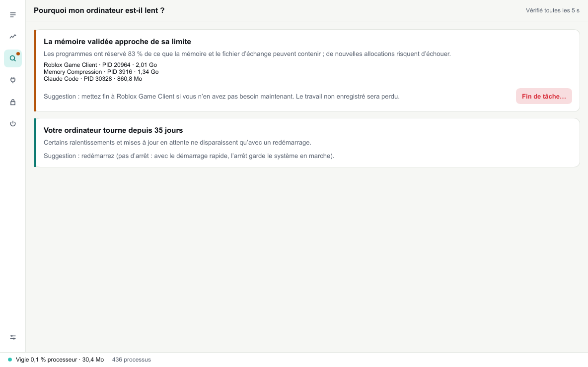
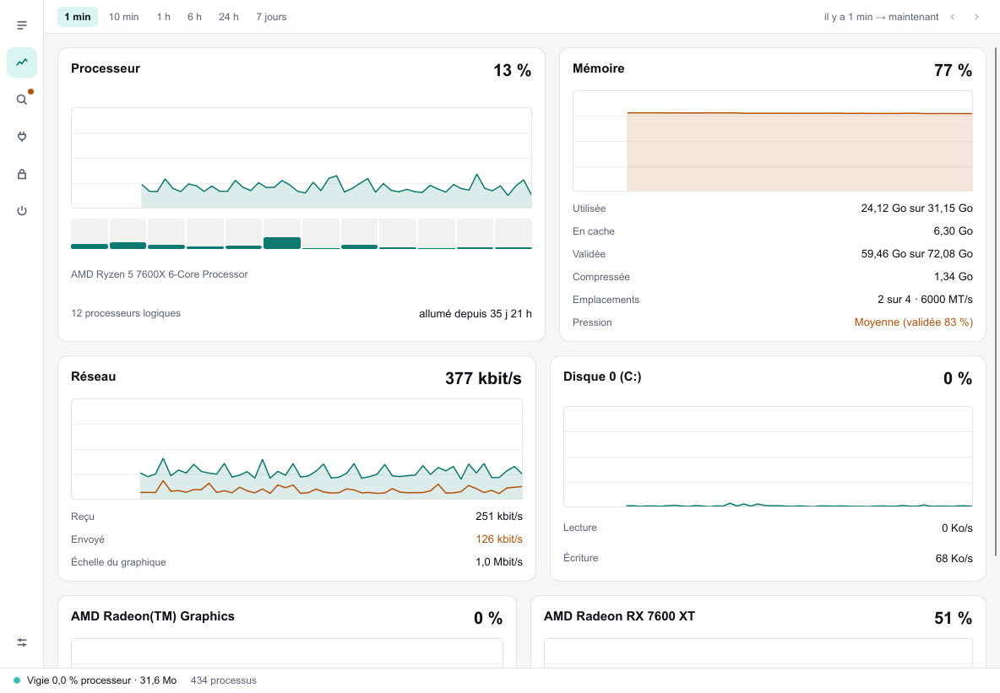
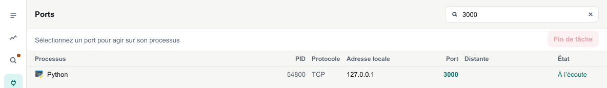
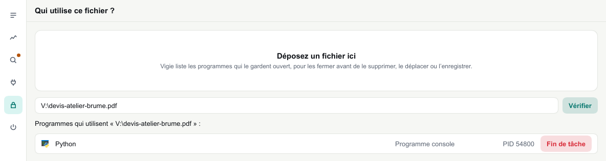
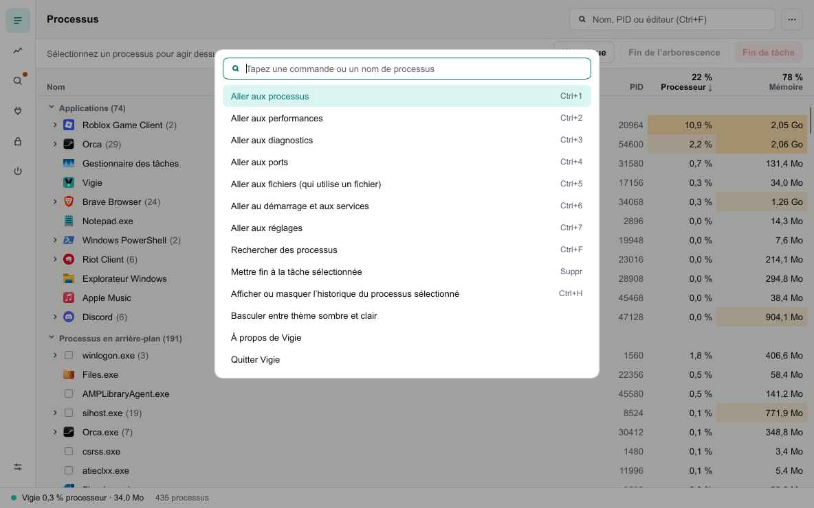

Tout voir.
Ne rien peser
Vigie est un gestionnaire de tâches gratuit. Il montre ce qui tourne sur votre PC, ce qui le ralentit et qui tient vos ports et vos fichiers, en se faisant oublier.
Windows 10 et 11 · gratuit · licence MIT

Vigie 0,3 % processeur · 9,2 Mo La barre d'état de Vigie affiche son propre coût, en permanence. Valeurs typiques sur un PC de bureau à 430 processus.
Son coût fait partie du cahier des charges
Mesuré à chaque version avec cargo xtask bench-overhead : une minute de fonctionnement, temps processeur et mémoire lus par le système. Une modification qui dépasse le budget n'est pas intégrée. Quand la fenêtre passe en arrière-plan, Vigie ralentit de lui-même ; réduit, il ne regarde plus qu'une fois toutes les dix secondes.
Pourquoi mon PC rame ?
Vigie pose la question à votre place, toutes les cinq secondes.
Processeur saturé, mémoire qui manque, programme qui grossit depuis une heure, disque à bout de souffle : chaque constat vient avec ses chiffres et une seule suggestion. Si vous le souhaitez, une notification vous prévient, au plus une fois par quart d'heure.

Remontez le temps.
Processeur, mémoire, réseau, disques et cartes graphiques, de la dernière minute aux sept derniers jours.
Survolez une courbe pour lire une valeur et son heure, faites-la glisser pour revenir en arrière. Les pics courts restent visibles sur les longues durées. Chaque processus sélectionné a aussi son propre historique.

Qui tient le port 3000 ? Qui verrouille ce fichier ?
Tapez un numéro de port : Vigie trouve le processus qui l'écoute. Déposez un fichier que Windows refuse de supprimer : il liste les programmes qui le gardent ouvert. Dans les deux cas, « Fin de tâche » demande d'abord confirmation et nomme ce qui va s'arrêter.


Ctrl+K, et le reste suit.
Une palette de commandes, des raccourcis pour chaque vue, des listes qui se parcourent aux flèches.
Programmes au démarrage, services, réglages : tout est à deux touches. Et si vous le voulez, Ctrl+Maj+Échap ouvre Vigie à la place du Gestionnaire des tâches, réversible à tout moment.

Ce que le Gestionnaire des tâches ne dit pas
Comparé au Gestionnaire des tâches de Windows 11. Il reste l'outil du système : Vigie ne le remplace que si vous le demandez.
Questions
Est-ce gratuit ?
Oui, sans contrepartie. Vigie est un logiciel libre sous licence MIT, écrit en Rust.
Qu'est-ce qui sort de ma machine ?
Rien. Vigie ne fait aucune requête réseau : pas de compte, pas de télémétrie, pas de mise à jour silencieuse. Ses réglages restent dans un fichier texte sur votre PC.
Faut-il des droits administrateur ?
Non. Vigie s'installe pour votre compte seulement. Seuls arrêter un service système et remplacer le Gestionnaire des tâches demandent une confirmation administrateur, au moment où vous le faites.
Pourquoi Windows affiche-t-il un avertissement ?
Cette première version n'est pas encore signée. Windows SmartScreen prévient donc au premier lancement : « Informations complémentaires », puis « Exécuter quand même ».
Et sur Mac ou Linux ?
Vigie s'y construit déjà et y montre les processus. Les performances, les diagnostics, les ports et le reste arrivent ensuite : tout est développé sous Windows d'abord.
Comment le désinstaller ?
Depuis Paramètres, Applications, comme n'importe quel programme. S'il remplaçait le Gestionnaire des tâches, la désinstallation lui rend d'abord sa place. Vos réglages restent dans %APPDATA%\Vigie, au cas où.
Gardez un œil dessus.
Windows 10 et 11, installeur sans droits administrateur ou version portable. Français et anglais.